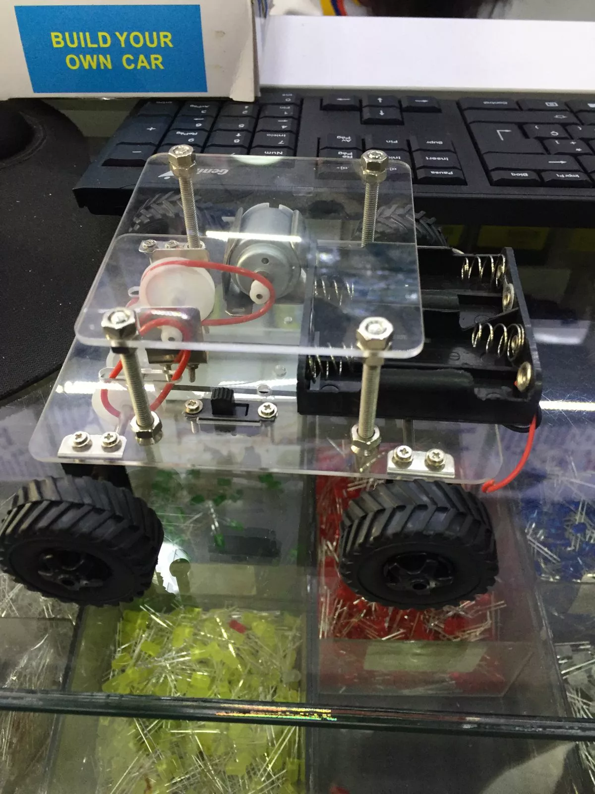

Objetivo General
diseñar un carro que se controle mediante via bluetooth y se detenga cuando detecte un obstáculo
indagar sobre los elementos que eran necesarios para la construcción de este
montaje de el circuito en tinkercad
Construir el carro teniendo en cuenta el montaje
Elaborar el diseño final de el carro ya con su respectivo circuito

Inicio